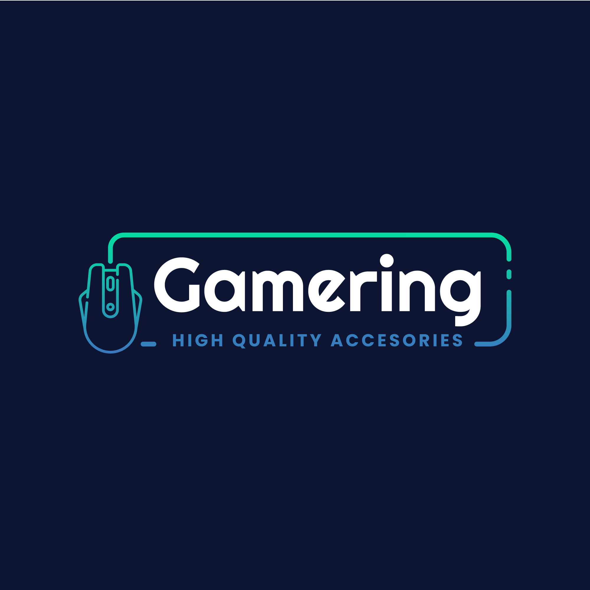

Games Store
Categorias de Jogos
| Categoria |
Descrição |
| Ação |
Jogos cheios de adrenalina com muita ação e combate. |
| Aventura |
Jogos que enfatizam a exploração, resolução de quebra-cabeças e narrativa. |
| RPG (Role-Playing Game) |
Jogos onde os jogadores assumem o papel de personagens e participam de histórias ricas e complexas. |
| Estratégia |
Jogos que desafiam os jogadores a planejar e tomar decisões estratégicas para alcançar a vitória. |
| Simulação |
Buscam recriar situações reais. |
| Esportes |
Jogos baseados em esportes. |
| Puzzle |
Envolvem a resolução de enigmas. |
Quiz 1
- Pergunta 1: Qual destes é um famoso encanador da Nintendo?
- a) Sonic the Hedgehog
- b) Crash Bandicoot
- c) Mario
- Pergunta 2: Qual é o nome do protagonista da série de jogos "God of War"?
- a) Kratos
- b) Zeus
- c) Ares
- Pergunta 3: Qual destes é um jogo de mundo aberto desenvolvido pela Rockstar Games?
- a) The Legend of Zelda
- b) Grand Theft Auto
- c) Halo
Quiz 2
Pergunta 1: Qual é o nome do estúdio de desenvolvimento responsável pela série "The Witcher"?
Selecione a resposta correta
Pergunta 2: Qual é o console de videogame lançado pela Sony em 2013?
Selecione a resposta correta